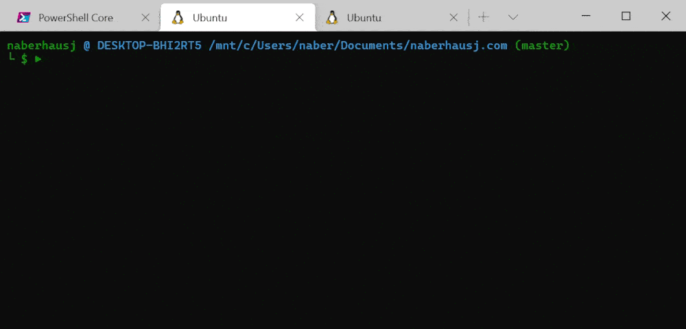
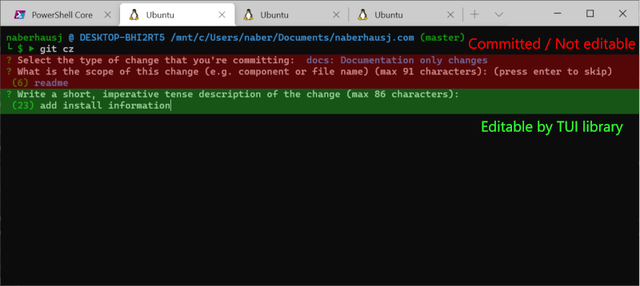

Go-Mitizen

Background
I've been a user of the Commitizen CLI utility for a couple of years now. Conventional commits are easier to read and look more professional. The tool also standardizes capitalization (by removing it), which is important for me as a meticulous but error-prone personality. And of course, they can be used to automate semantic versioning if the need ever arises.
Since I started, I've had two problems with it. First, it's slow. Trying a few times with a stopwatch, I got 2 seconds until interactivity on average. That might not be a long time for an NPM utility, but when I use a git command, I expect it to be as instantaneous as the others. It's rendering is also slow, resulting in a lot of flashing when typing in text. The other problem I've had is that it's not really meant for projects written outside of the NPM ecosystem. In such a project, you can configure which commitizen adapter you want to use, but you can't configure that adapter without a package.json file.
I looked around but couldn't find a native equivalent that had parity with the original. So I started writing my own. After three days of sporadic work, I was able to make my first commit using the tool.
Custom TUI
A standard terminal is good at printing a stream of characters, one after the other. To make a terminal work for an interactive program such as this, a terminal user interface (TUI) library like NCurses is usually used. There are several powerful Go TUI libraries. Unfortunately, they all clear the entire terminal window when running. For my commitizen client, I wanted it to behave like the original and only occupy as many lines as necessary.
To accomplish this, I wrote my own simple TUI library. It works similar to a standard terminal where you can only write text left-to-right, top-to-bottom. The only difference is that it keeps track of how many lines have been written. With a simple clear() call, it will erase everything that has been written and move the cursor back to the start. When a set of lines no longer needs to be interactive, the output is committed and cannot be further edited.
Since my library was re-rendering the entire prompt for each keypress, I was worried that it would be flickery like the original. To alleviate this, I have a simple string buffer that I write all of the text and ANSI escape code into. When I have finished drawing the whole prompt, I print the entire buffer at once. Somewhat surprisingly, this works really well. Even with a full terminal of text, it still feels fast and has no flickering. In fact, it works better than some of the NCurses applications I remember writing at University.
Prompts

The commitizen client has a few different types of prompts, which I wrote as reusable components. The most common and difficult one is text entry. The original doesn't support real multiline commit bodies making it harder to write detailed commit messages. Their justification is that it requires a full text-editor to be implemented by the utility. So I did exactly that.
In addition to supporting multiple lines, the text-editor also makes writing commit subjects and breaking change descriptions more pleasant. If the terminal soft-wraps the text to the next line, you can use the up and down arrows to navigate between lines. Whereas in the original, you have to hold the left and right key down
Committing with Git
Executing the git commands ended up being the easiest part. I create a commit message from the user inputs and execute a commit using:
escaped := strings.ReplaceAll(message, "\"", "\\\"") // Escape quotation marks
cmd := exec.Command("git", "commit", "-m", escaped)
cmd.Stdout = os.Stdout
cmd.Stderr = os.Stderr
err := cmd.Run()
By changing the Stdout and Stderr file descriptors in this manner the output of the command goes straight to the user's terminal. This means that I don't have to worry about telling the user about the reason for any error since Git will have already done that (unless, of course, the error is coming from the OS and not Git, which is why handling and logging the error is still important). The same applies when the command succeeds.
Installing Git Subcommand
Like the original, I want to run my commitizen client with git cz. When Git is run with a subcommand such as git cz it will run the first executable it finds in your PATH named git-cz. The best directory to put this executable in is Git's own executable directory. You can find this by running git --exec-path. This is the first place Git looks, so commands here are given priority over others. To automate installation, my commitizen client finds the executable directory and makes a copy of itself inside of it.